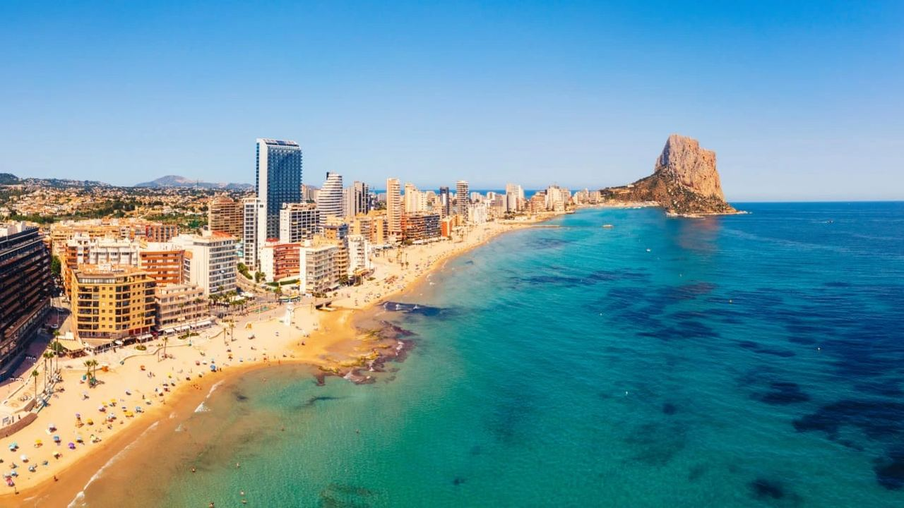
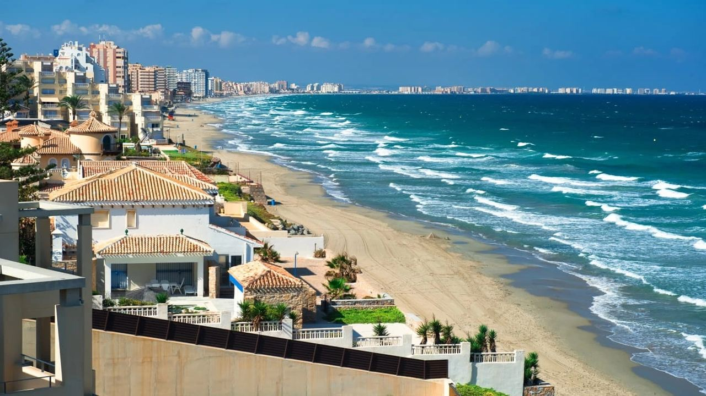

Investing in Spain · Guide
Buying Property in Spain as an Investment or to Rent Out
 By Anita Orłowska · · updated · 5 min read
By Anita Orłowska · · updated · 5 min read

In short: Spanish house prices rose 12.2% in the year to the second quarter of 2026 (INE), and idealista puts the average gross rental yield at about 6.5%. On the coast, the return depends mostly on location, the type of letting and your costs. Holiday letting earns more per week but needs a tourist licence, community approval and active management. Long-term letting gives steadier, lower income with less work. After costs and tax, a typical coastal apartment let long term returns roughly 3 to 5% a year, before any rise in value. Non-resident landlords pay 19% (EU/EEA residents, on net income) or 24% (others, on gross income).
A good investment property in Spain is not just a nice apartment near the sea. It is the right home, in the right place, let in the right way, with the numbers worked out before you sign. This guide brings together what we tell buyers who want rental income or capital growth.
Why investors buy on the Spanish coast
- Price growth: the INE housing price index rose 12.2% year on year in the second quarter of 2026, with resale homes up 12.9% and new builds 7.4%. Growth will not always be this fast, but supply in the best coastal areas is limited.
- Rental demand: tourists, remote workers, retirees spending the winter and local families all rent on the coast, so a well-located home can be let in more than one way.
- Yields: idealista estimates the average gross yield in Spain at about 6.5% (second quarter of 2026), higher in many mid-sized cities than in Madrid or Barcelona.
- Your own use: unlike most investments, you can spend part of the year in it.
The risks are real too: rules on holiday letting are getting stricter, costs rise, and a poor location can sit empty for months. The rest of this guide is about avoiding those mistakes.
What makes a location grow in value
- Access: a short drive to Alicante or Málaga airport matters more to tenants and buyers than almost anything else.
- All-year life: towns with shops, restaurants, schools and health care open in winter let more months a year than purely seasonal resorts.
- New infrastructure: planned roads, rail links, marinas and hospitals tend to pull prices up before they open. Check the town plan.
- Limited supply: frontline, sea-view and walking-distance-to-the-beach homes are scarce and hold their value best.
- Local rules: some cities now limit new tourist flats. Málaga city, for example, stopped new tourist-flat registrations from July 2026. Check before buying for holiday letting.
Where to look
| Area | Typical buyer | Best letting type |
|---|---|---|
| Marbella, Estepona | Premium apartments and villas | Holiday lets, long stays for families and remote workers |
| Málaga city | City apartments | Long-term and mid-term lets (new tourist flats restricted) |
| Alicante city | City and beach apartments | Long-term, students, remote workers, holidays |
| Torrevieja, Orihuela Costa | Affordable apartments and townhouses | Holiday lets and winter stays |
| Benidorm | High-rise apartments with sea views | Holiday lets almost all year |
| Calpe, Altea, Jávea | Apartments and villas with character | Holiday lets, long winter stays |
For prestige villas see our guide on where to buy a luxury villa.
Holiday letting or long-term letting
| Holiday letting | Long-term letting | |
|---|---|---|
| Income | Higher per week, seasonal | Lower, steady every month |
| Licence | Regional tourist registration and, in apartment blocks, a 3/5 vote of owners | No licence; tenancy law (LAU) applies |
| Work | Cleaning, check-ins, guest registration, reviews | Little once a good tenant is in |
| Own use | Easy to block weeks for yourself | Not while the tenancy runs |
| Management | Usually 20–30% of income to an agency | Often around one month's rent a year |
Read the details in our guides to short-term rental rules and long-term letting.
Worked example: what a rental really earns
An illustrative resale apartment on the Costa Blanca, let long term, owned by a non-resident living in another EU country:
| Price | €250,000 |
| Purchase taxes and fees (about 11%) | €27,500 |
| Total invested | €277,500 |
| Rent: €1,100 × 12 | €13,200 (gross yield on price 5.3%) |
| IBI, community fees, insurance, repairs | − €2,300 |
| Net before tax | €10,900 |
| Tax: 19% of net after 3% depreciation on a €150,000 building value | − €1,216 |
| Net after tax | €9,684 (3.5% on €277,500) |
The figures are an example, not a promise. A landlord resident outside the EU/EEA pays 24% on the gross rent with no deductions, here €3,168. Any rise in value comes on top of this income.
Three common strategies
- Off-plan: buying from a developer before completion often means a lower price and a choice of finishes, and the value can rise during construction. By law your payments must be protected by a bank guarantee or insurance, so ask for it with every payment. Compare the options in our guide to new builds and resale.
- Renovation: an older home in a strong location, updated well, can gain more than the cost of the works. Get a builder's estimate and check permits before you buy.
- Managed holiday let: a well-equipped apartment with a professional manager earns the most per week and still lets you use it, but check the licence position first.
Taxes and legal points for non-resident landlords

- Purchase: transfer tax on resale homes, or VAT plus stamp duty on new builds, plus notary, land registry and legal fees. See how to buy in Spain.
- Rental income: declared on form 210. Residents of the EU, Iceland and Norway pay 19% on net income after expenses; everyone else pays 24% on the gross.
- Weeks without tenants: non-residents also pay tax on an imputed income of 1.1% or 2% of the cadastral value for the days the home is not let.
- Every year: IBI to the town hall, and wealth tax only on large holdings. See property and wealth taxes.
- Holiday guests: their details must be sent to the authorities through SES.HOSPEDAJES.
- Your home country: you will usually declare the income there too, with a credit for Spanish tax under the tax treaty. Ask your adviser.
If you might move to Spain, read resident or non-resident first, as the tax rules change.
Frequently asked questions
What rental yield can I expect in Spain?
idealista puts the average gross yield at about 6.5% (second quarter of 2026). After costs and tax, a typical coastal apartment let long term returns roughly 3 to 5% a year on the total invested, before any rise in value.
Is holiday letting or long-term letting better?
Holiday letting earns more per week but needs a tourist registration, in apartment blocks the approval of 3/5 of the owners, and active management. Long-term letting pays less but is steadier and needs little work.
How much tax does a non-resident pay on rental income?
Residents of the EU, Iceland and Norway pay 19% on net income after expenses. Other non-residents pay 24% on the gross rent. The income is declared on form 210.
Is it safe to buy off-plan in Spain?
Payments to a developer before completion must be secured by a bank guarantee or insurance. Ask for the guarantee certificate with every payment and have a lawyer check the licences.
Can I use my investment property myself?
Yes. With holiday letting you can block weeks for yourself. With a long-term tenancy you cannot use it while the contract runs.
Let us run the numbers with you

Tell us your budget and whether you want income, growth or a home you also use, and we will shortlist properties on the Costa Blanca and Costa del Sol with realistic rent and cost figures. Contact us.
Sources: INE – Housing Price Index, Q2 2026 · idealista – rental yield reports · BOE – Non-Resident Income Tax Act (RDL 5/2004) · BOE – Building Act (Ley 38/1999), protection of off-plan payments